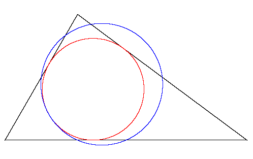

Obectivism laid the groundwork for the internet in the sense that the entity was created as an outlet through which one could ideally exist in a more democratic space lacking the bureaucratic hierarchies of the physical world. On the internet, many believe that one woman or man should be her or his own boss, their own person driving them towards productive work. Ayn Rand's philosophy calls for a higher priority for absolute individual rights, an idea that has been important and percolating on the internet since its creation. Many of those involved in the development and evolution of the web place emphasis on the right of the individual when it comes to facets such as personal privacy and security as well as economic freedom, both having to do very much with panoptical sentiments related to the government.
